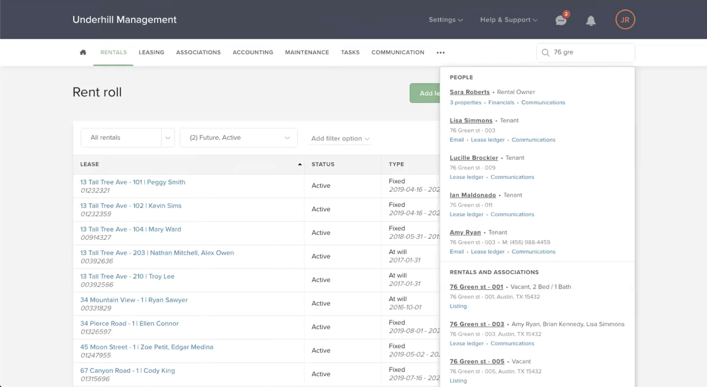
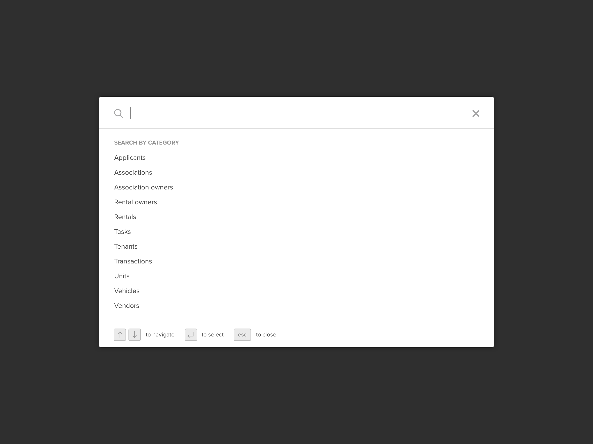
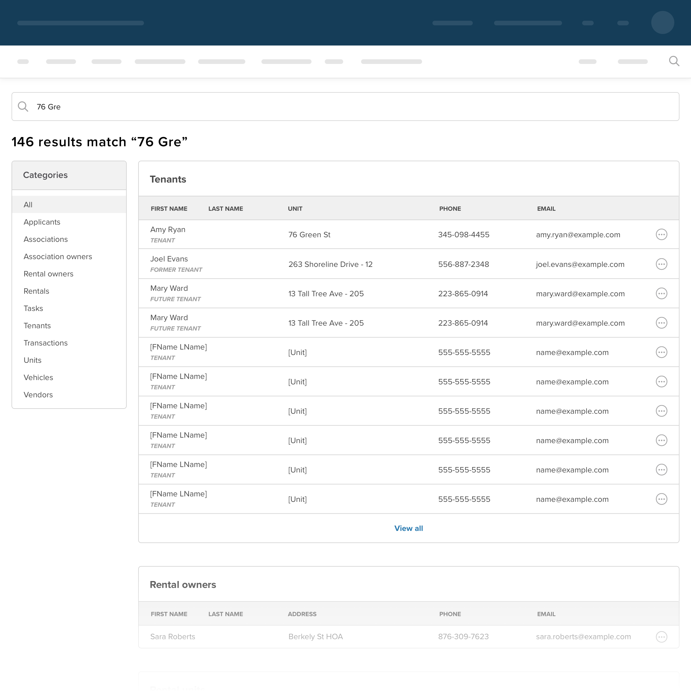
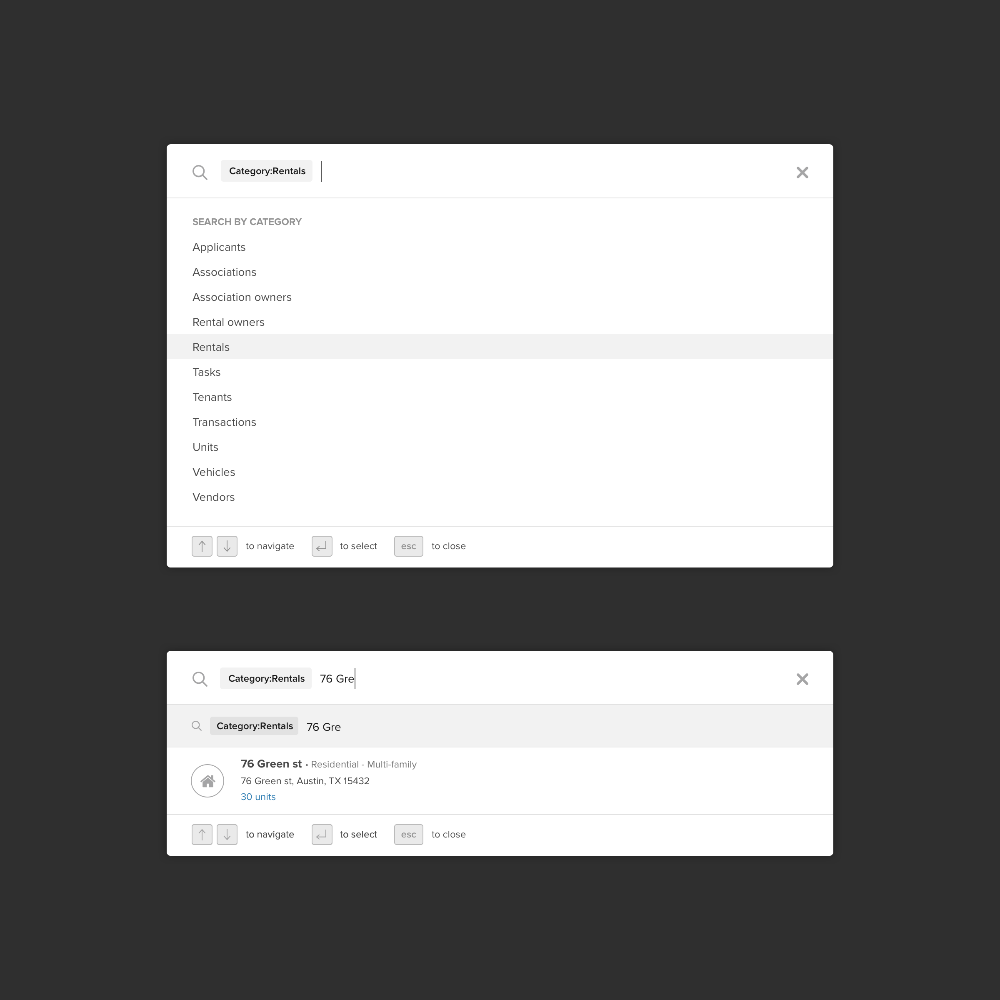
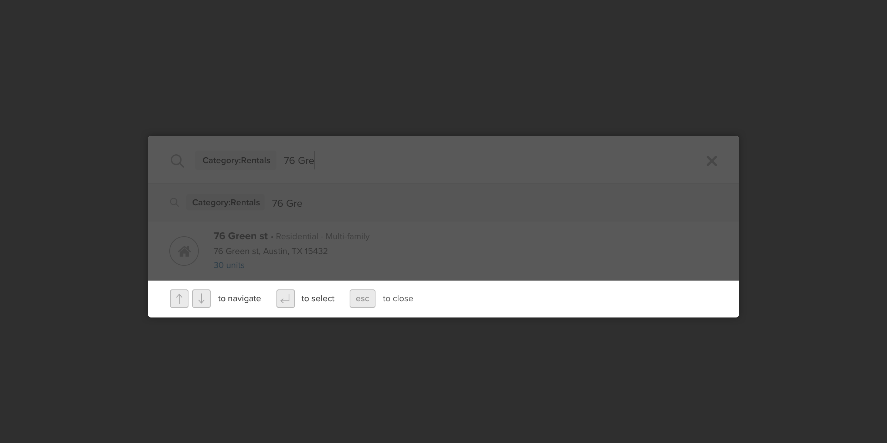

Global search refresh
Finding things faster.
Finding things faster.
With a finite number of search results returned on each search query, a lack of options to refine search results, and leveraging only some of the types of data users were looking for, Buildium's global search feature fell short of user expectation and hindered their ability to find what they were looking for.
Deliver a search experience that can support large amounts of results, faster and more successful searches and matches the user's mental model of modern web search experiences.
Product owner, Software engineers (3), Senior UX Designer (Me), UX Content Designer, UX Researcher
Buildium
Without a dedicated team responsible, Buildium's search experience fell by the wayside. It suffered from experience issues as well as backend functionality that limited its ability to meet user expectations and desires.
Conducting an initial investigation which involved crafting baseline user flows and taking rigorous notes, I was able to assess the current state of our search experience. Right off the bat there I uncovered some glaring issues with our search.
These two issues alone were preventing many search results from ever being found by the user.
Leveraging a tool called UserVoice, that allows our users to submit feature and improvement requests, we were able to find a lot of inquiries for search related updates. Expanding on the searchable database to include things like tasks, transactions, and vehicles, were some of the most common themes amongst the requests we found.
There is an abundance of search experiences on the web and users are very familiar with how they work. Doing some industry analysis, we were able to gain a sense of how search experiences compare across a variety of apps. Looking at the search experiences for web applications such as GSuite, Asana, Salesforce, Slack and more, we were able to quickly see the current table-stakes standards and the differentiators that set them apart.
With initial discovery research in hand, we had a better sense of our current users' expectations and how our current global search stacked up. Users were looking for something that met the standards of a modern web experience with an ever scaling database of searchable data that made searching a breeze. Our existing search experience made searching for things a difficult and painstaking process due to an outdated interface that limited both the number of results returned and the types of results users were expecting to find.
Grabbing some dry erase markers, I brainstormed ideas with my scrum team's product owner and dev lead on possible solutions. We knew that users were having trouble finding results that they searched for. However, we also knew that users were looking for categories that didn't exist yet in the searchable database. If we decided to expand the list of categories that would mean there would be more possible matches, thus making it harder to find things. We'd need a solution that made finding things easier, but could also scale to accommodate more results. Some of the ideas we generated in that session:
From these ideas I was able to generate an initial low fidelity mockup that confirmed the efficacy of our ideas. This prototype became an artifact that we could then use to get feedback amongst our peers and to share our direction with product stakeholders.
Users are very familiar with search experiences and are able to move through them very fast when they are working correctly. If something was off, users would know it. The delivery of my design to my engineering counterparts needed to not just be pixel perfect, but also needed to clearly outline the microinteractions involved in this experience. I made sure that my design file had proper specifications and guidance for engineers.
Normally, I prefer to conduct usability testing earlier in the process with a design prototype. However, the complexity involved with being able to test a search experience made us decide to do a usability test with a live beta. We flipped the new experience on for customers during the test, so that they could search for their data and have full functionality available. This allowed us to conduct an accurate test of the workflow. The results of the test were positive. Our new experience was well received and easy to use. Customers were also able provide some minor feedback that we were able to roll into the final experience when we went live.
Due to a lack of top level navigation real estate available to dedicate to search, we converted the previously restricting text input and dropdown search experience to live in a modal that appeared when the search icon was clicked. With a dedicated modal, the search experience could comfortably accommodate more information and would easily scale to new search-related features.
When the initial list of results a user gets doesn't include what they'll looking for, hitting RETURN on their keyboard or clicking a "View all" link brings them to a Results page with a cohesive list of results organized and filterable by category.
Users can refine results on the fly by selecting categories to filter their search, so that they're only seeing the types of results they want. Thus, making what they're actually looking for that much easier to find.
For keyboard-centric users we built in new keyboard shortcuts to allow users to take full advantage of the search experience without ever having to reach for their mouse.
With a more scalable approach we could now safely add in new categories. Out of the gate we expanded to 4 new categories with plans to slowly roll out new categories over time.